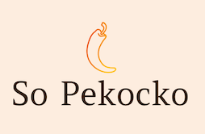

Scénario :
Enfin, vous avez trouvé votre premier stage en tant que développeur web chez Reservia, une petite entreprise proposant un outil de planification de vacances.
Leur site permet aux usagers de trouver des hébergements et des activités dans la ville de leur choix.
Les hébergements peuvent également être filtrés par thématique, par exemple leur budget ou leur ambiance.
Un nouveau design basé sur les principes du Material Design vient d’être proposé par Loïc, designer UI.

Scénario :
Vous venez d’être recruté chez Ohmyfood!, en tant que développeur junior. Félicitations !
Ohmyfood! est une jeune startup qui voudrait s'imposer sur le marché de la restauration.
L'objectif est de développer un site 100% mobile qui répertorie les menus de restaurants gastronomiques.
En plus des systèmes classiques de réservation, les clients pourront composer le menu de leur repas pour que les plats soient prêts à leur arrivée.
Finis, les temps d'attente au restaurant !

Scénario :
Vous travaillez pour La chouette agence, une grande agence de web design basée à Lyon.
L’activité de l’entreprise a bien démarré mais aujourd’hui, elle est en perte de vitesse.
Eh oui, la concurrence est rude. La fondatrice de l’entreprise, Sophie, cherche une solution pour faire repartir l’activité.
En tapant “Entreprise web design Lyon” sur Internet, elle s’aperçoit que le site de l’agence apparaît seulement en deuxième page des moteurs de recherche.
Par chance, un de vos collègues, Martin, lui a dit que vous étiez un spécialiste en référencement.
Scénario :
Félicitations ! Vous avez été recruté en tant que développeur front-end par Orinoco, une entreprise de commerce en ligne.

Scénario :
Vous avez passé la dernière année en tant que développeur back-end indépendant et vous avez travaillé sur plusieurs projets de tailles et de difficultés variées.
La semaine dernière, vous avez reçu un message sur votre plateforme de freelance vous demandant de l'aide pour un nouveau projet.
Les sauces piquantes sont de plus en plus populaires, en grande partie grâce à la série YouTube « Hot Ones » .
C’est pourquoi ce nouveau client, la marque de condiments à base de piment Piiquante, veut développer une application web de critique des sauces piquantes appelée « Hot Takes » .

Scénario :
Vous êtes développeur depuis plus d'un an chez CONNECT-E, une petite agence web regroupant une douzaine d'employés.
Votre directrice, St√©phanie, invite toute l'agence √† prendre un verre pour c√©l√©brer une bonne nouvelle ! Elle vient de signer un contrat pour un nouveau projet ambitieux ! ü•Ç
Le client en question est Groupomania, un groupe spécialisé dans la grande distribution et l'un des plus fidèles clients de l'agence.